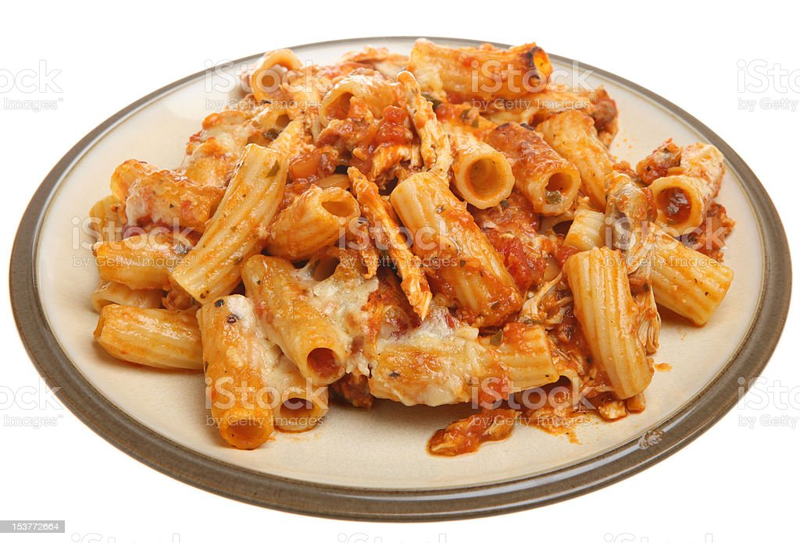

Pasta bake

Description
Enjoy this gooey cheese and chicken
pasta bake for the ultimate family dinner.
Ingredients
- 4 tbsp olive oil
- 1 onion, finely chopped
- 2 garlic cloves, crushed
- 1/4 tsp chilli flakes
- 2 x 400g cans chopped tomatoes
- 1 tsp caster sugar
- 6 tbsp mascarpone
- 4 skinless chicken breasts, sliced intp strips
- 300g penne pasta
- 70g mature cheddar, grated
- 50g grated mozzarella
- 1/2 small bunch of parsley, finely chopped
Steps:
- Heat 2 tbsp of the oil in a pan over a medium heat and
fry the onion gently for 10-12 mins. Add the garlic and
chilli flakes and cook for 1 min. Tip the tomatoes and
sugar and season to taste. Simmer uncovered for 20 mins or
until thickened, then stir through the mascarpone.
- Heat 1 tbsp of oil in a non-stick frying pan.
Season the chicken and fry for 5-7 mins or until the
chicken is cooked through.
- Heat the oven to 220c/200c fan/gas 7. Cook the penne
following pack instructions. Drain and toss with the
remaining oil. Tip the pasta into a medium sized overproof
dish. Stir in the chicken and pour over the sauce. Top with
the cheddar, mozzarella and parsley. Bake for 20 mins or until
golden brown and bubbling.